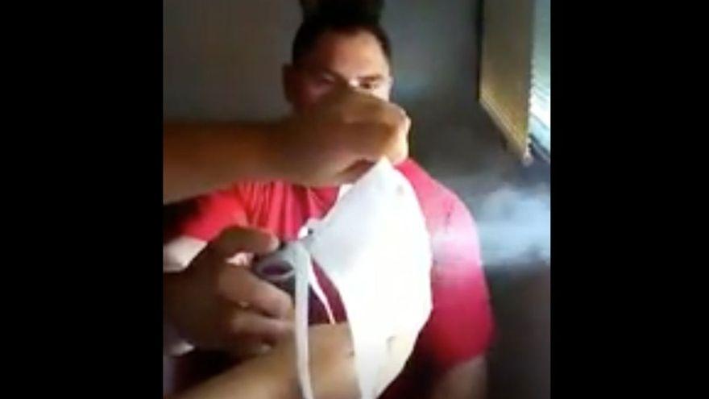

Un vídeo demuestra que las mascarillas caseras no son eficaces

Una imagen vale más que mil palabras, y a ese refran se han agarrado los bomberos de la localidad argentina de Tortuguitas para explicar lo poco o nada eficaces que son las mascarillas caseras para evitar el contagio del coronavirus.
Más que una foto, ha sido un vídeo que han subido a las redes sociales en el que realizan varias pruebas que demuestran que valen de bien poco.Una de ellas es usar un aerosol como si fuera un estornudo, que, por cierto, es menos potente que un estornudo.Cuando usan una mascarilla quirúrgica o una de filtro reglamentaria, no hay partícula que las atraviese; en cambio, cuando usan una de tela, aunque tengan una capa doble, el pulverizado no tiene problemas para pasar al otro lado.
Su conclusión es clara, y así lo recomiendan a los espectadores: 'No usen 'barbijos' [mascarillas] hechos de tela casera', insta el bombero.
Posted By: El Periódico


Content Date: n/a
Download Date: 2021-04-21
Document ID: L0C04AJG1